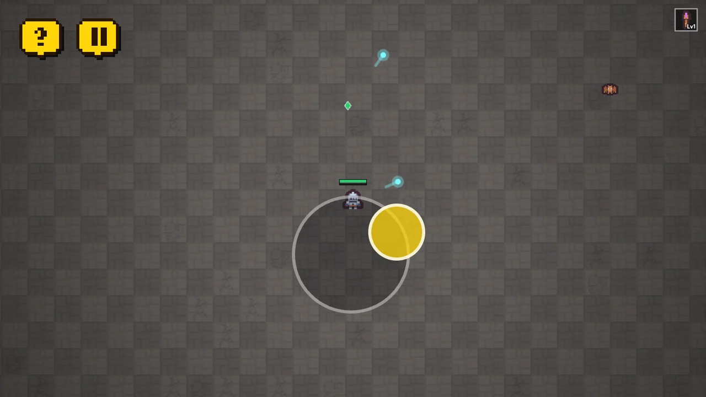
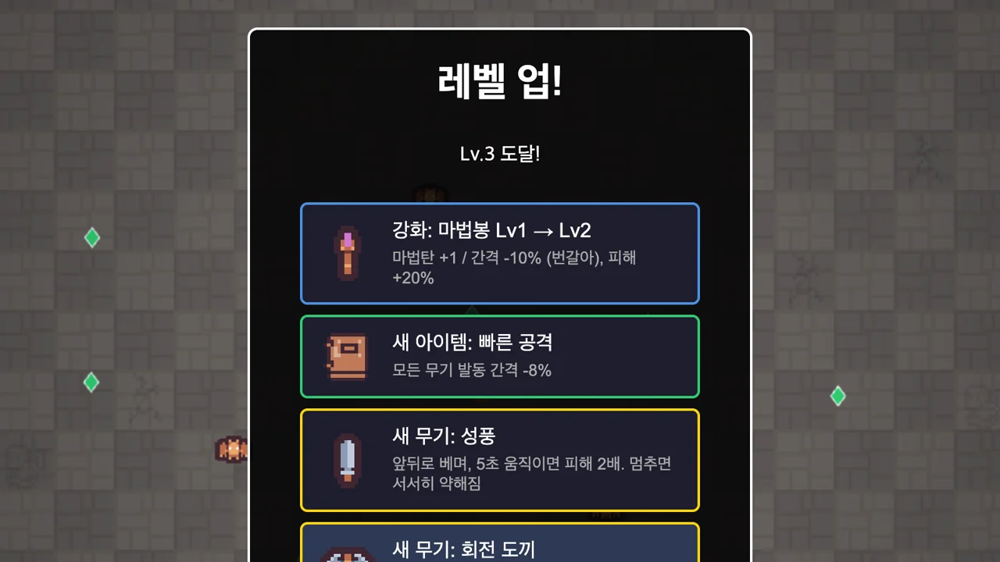
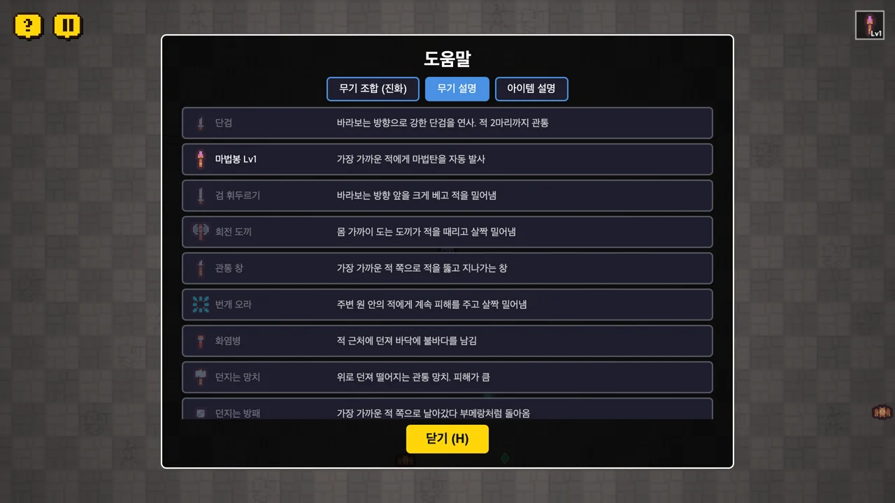
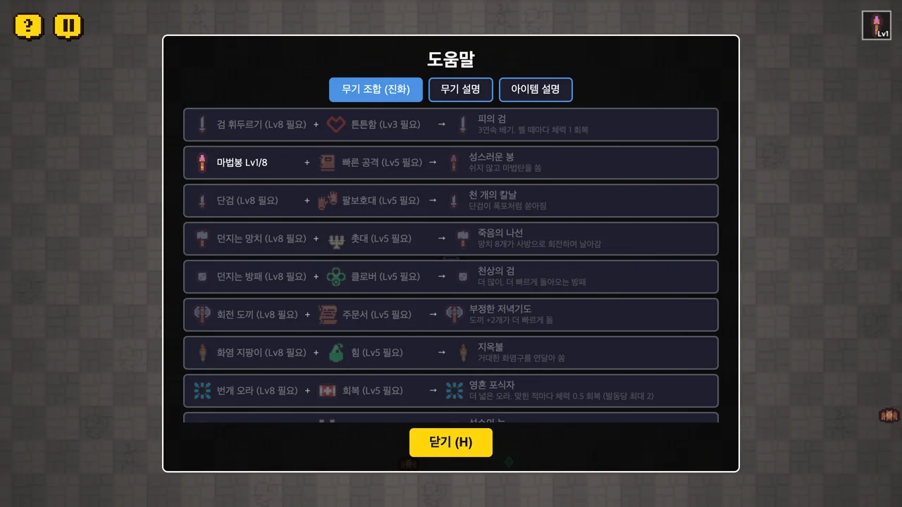
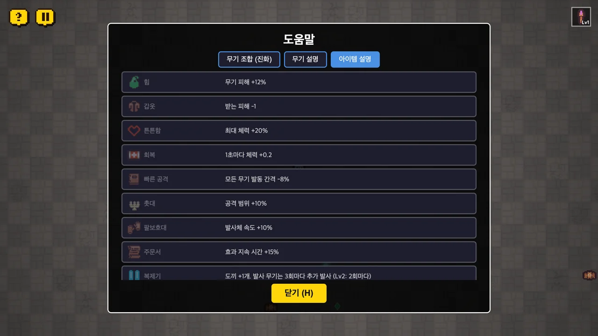
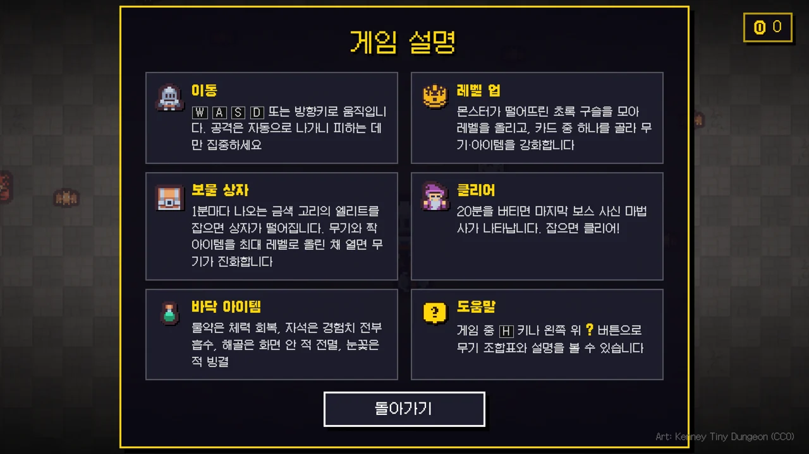
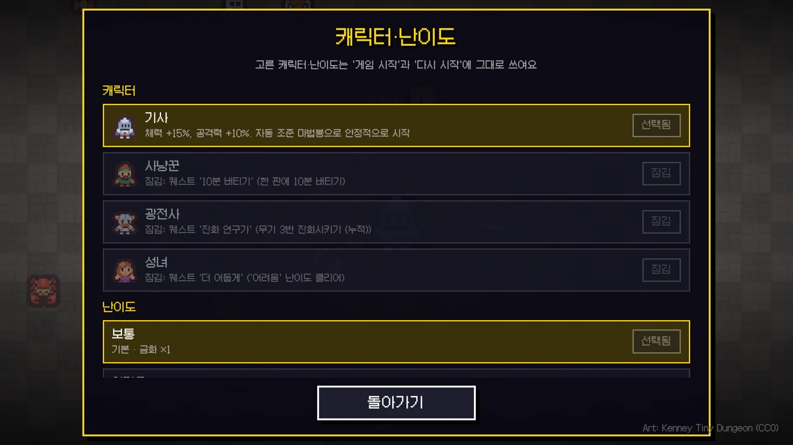
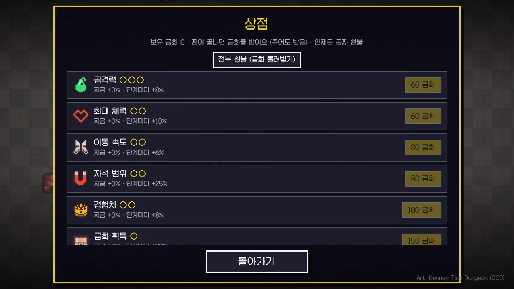
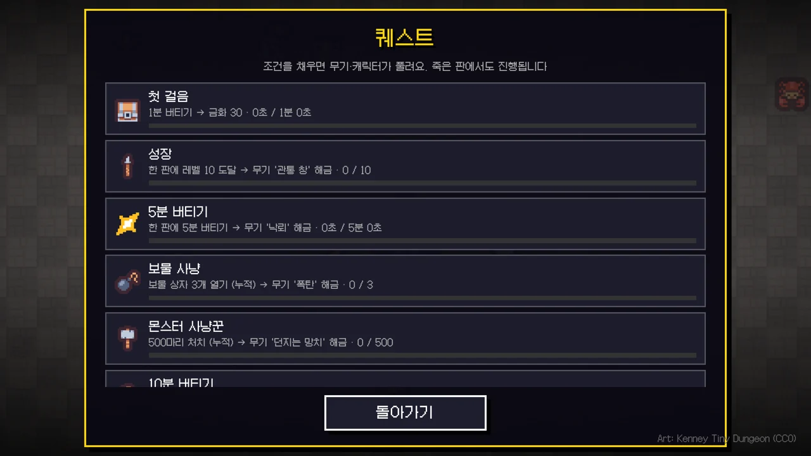

01피하기만 하면 돼요
WASD나 방향키로, 휴대폰에선 화면을 끌어서 움직여요. 조이스틱 중심이 손가락을 따라와 방향을 바로 바꿀 수 있고, 공격은 알아서 나가요. 단검이나 검처럼 바라보는 방향으로 나가는 무기도 있어서, 피하면서 방향도 맞춰야 해요!
STAGE 01 · 게임
몰려오는 몬스터 사이에서 살아남는 뱀서라이크 웹 게임 던전 서바이버예요. 컴퓨터와 휴대폰에서 플레이할 수 있어요! 20분을 버티고 마지막 보스를 잡으면 클리어예요!

WASD나 방향키로, 휴대폰에선 화면을 끌어서 움직여요. 조이스틱 중심이 손가락을 따라와 방향을 바로 바꿀 수 있고, 공격은 알아서 나가요. 단검이나 검처럼 바라보는 방향으로 나가는 무기도 있어서, 피하면서 방향도 맞춰야 해요!

몬스터가 떨어뜨린 초록 구슬을 모으면 레벨이 올라요. 카드 중 하나를 골라 무기나 아이템을 받고, 한 번은 다시 뽑을 수도 있어요!

단검, 회전 도끼, 번개 오라, 던지는 망치까지 무기가 23가지예요. 무기마다 공격 모양이 달라요!

무기와 짝 아이템을 최대 레벨로 올리고 보물 상자를 열면 더 센 무기로 진화해요. 조합표는 ? 버튼으로 보고, 만렙 상자 룰렛에서도 받을 보상 이름을 확인해요!

힘, 갑옷, 촛대, 클로버처럼 캐릭터를 키워 주는 아이템이 16가지 있어요.

20분을 버티면 마지막 보스 사신 마법사가 나타나요. 잡으면 클리어! 지난 시간·처치 수는 화면에서 보고, 소리는 버튼이나 M 키로 끌 수 있어요!

기사로 시작하고 퀘스트를 깨면 사냥꾼, 광전사, 성녀가 풀려요. 캐릭터마다 시작 무기와 규칙이 달라요. 보통을 클리어하면 어려움, 매우 어려움, 지옥이 차례로 열려요!

판이 끝나면 죽어도 금화를 받아요. 상점에서 공격력이나 최대 체력 같은 능력을 계속 올려 두고, 언제든 공짜로 환불해요!

1분 버티기, 레벨 10 도달 같은 퀘스트를 깨면 새 무기와 캐릭터가 풀려요. 캐릭터별 클리어나 지옥 난이도 클리어 같은 오래 걸리는 퀘스트 14개는 금화를 줘요. 죽은 판에서도 진행돼요!
처음 만든 게임이에요. 무기 5가지로 시작해서 몬스터, 무기 진화, 보스를 하나씩 더했어요. 10월 6일에는 금화 상점, 퀘스트, 캐릭터, 난이도, 이어 하기를 더해서 여러 판 할수록 강해지게 했어요. 10월 7일에는 지난 시간·처치 수 표시, 따라오는 터치 조이스틱, 배경 음악·효과음과 소리 끄기를 더했어요!